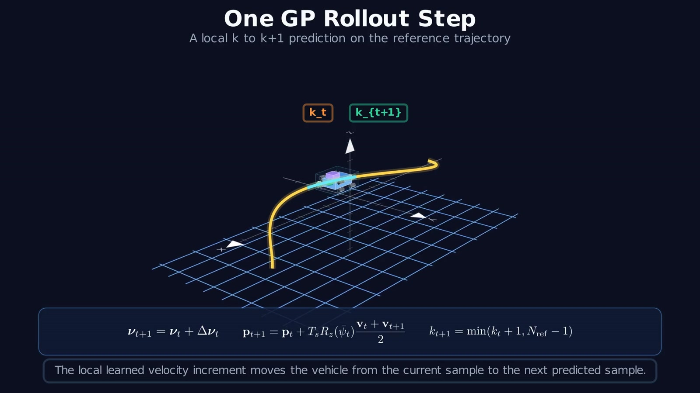

Problem
Gaussian-Process model-based reinforcement learning is attractive for robot control because it is data-efficient and represents epistemic uncertainty. Its main bottleneck is the computational cost of repeatedly sampling and evaluating exact GP posteriors across long stochastic rollouts.
Method
P-MC-PILCO replaces repeated exact posterior evaluations with computationally efficient GP approximations and samples coherent dynamics functions in weight space. A policy is optimized through stochastic rollouts while preserving trajectory-level uncertainty.

Evaluation
The framework is evaluated across nonlinear simulation benchmarks and on a real 7-DoF Franka Emika Panda, where it performs high-frequency trajectory tracking using policies optimized from Gaussian-Process dynamics models.
- Nonlinear control benchmarks including cart-pole, double pendulum on cart, and MuJoCo Swimmer.
- Real-robot trajectory tracking on a 7-DoF Franka Emika Panda.
- Comparison of prediction cost, policy-optimization time, tracking error, and sample efficiency.
P-MC-PILCO on the Franka Emika Panda
The experiment shows reference-versus-actual joint trajectories together with tracking errors and commanded torques during closed-loop execution.
Research contribution
The work studies how structured GP approximations can improve the computational scalability of uncertainty-aware model-based RL while retaining practical closed-loop performance.